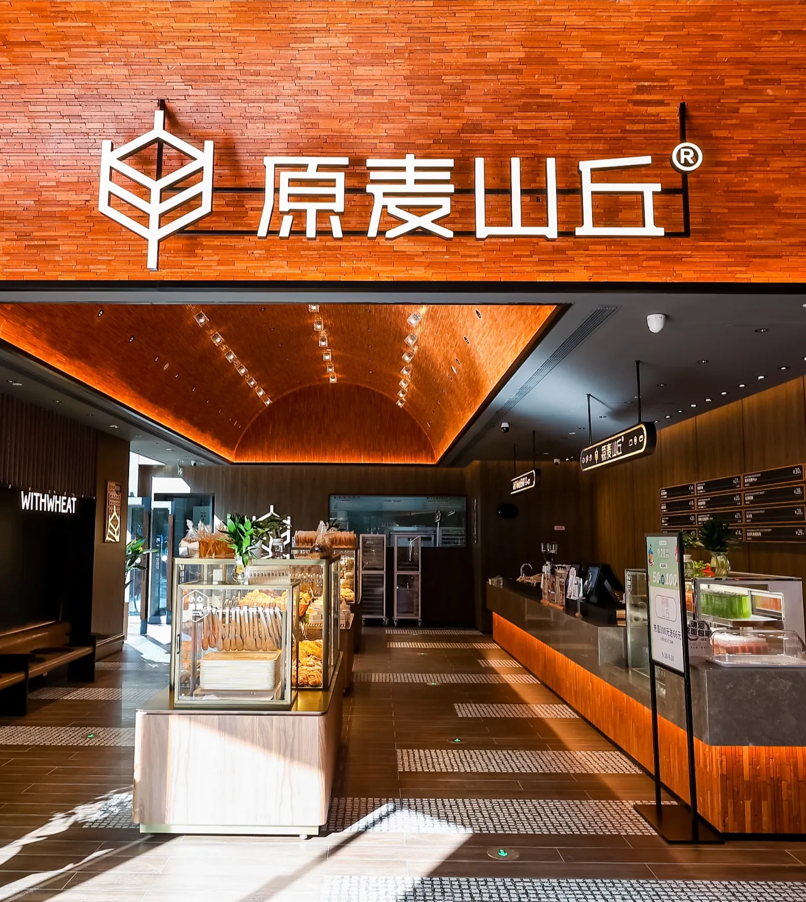
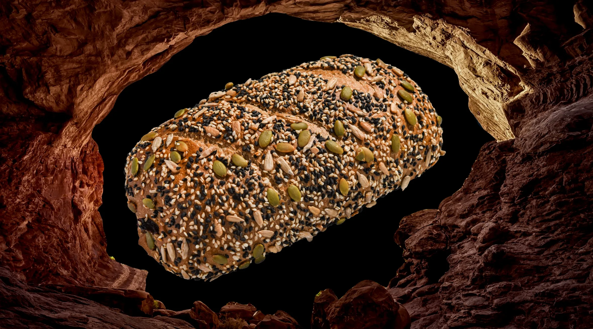
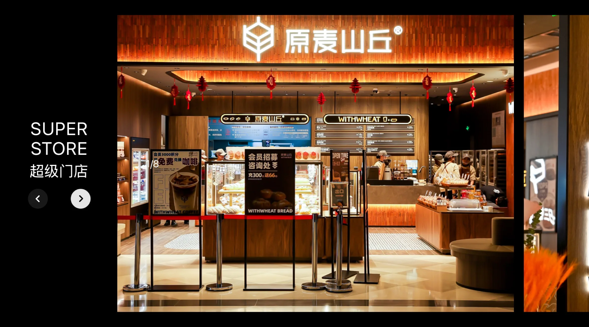
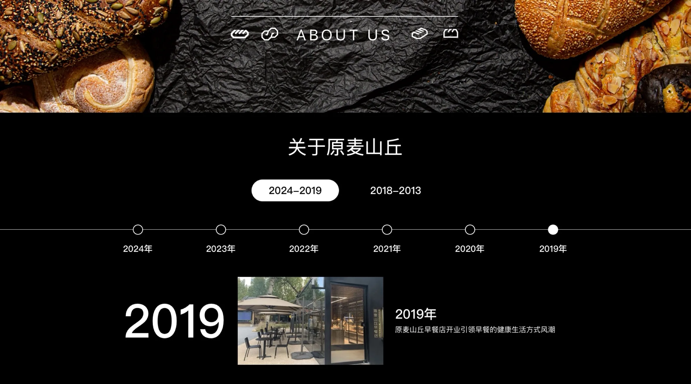

01 / PRODUCT
放大产品质感
放大产品质感
强化视觉记忆
以高冲击力的产品视觉突出原料与口感，让用户快速感知明星产品的独特价值。
原麦山丘是一家总部位于北京的全国连锁品牌面包店，欧式软面包领跑品牌以「天然，安全，诚信」的低糖、低油、无防腐剂、无反式脂肪、无香精以及面包的用油糖用量为普通面包的6%和10%而备受广大消费者的追捧，用户量破千万。我的工作是更新品牌门户网站，主要通过简单高级的交互以及配色排版提高品牌透传率。




从品牌认知到产品种草，再到门店到访与持续连接，重构原麦山丘官网的核心用户路径。
清晰传达天然、安全、诚信的品牌价值，建立统一且可识别的软欧包品牌心智。
聚焦明星产品与关键卖点，用更短的信息路径帮助用户完成浏览、理解与选择。
将门店查询设为核心转化入口，连接线上品牌内容与线下到店消费场景。
统一承接客服、社交媒体与会员触点，让用户关系从单次访问延伸到持续连接。
END OF CASE